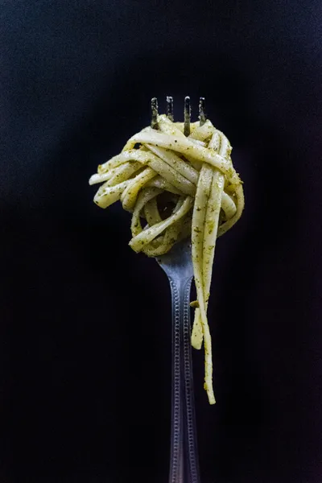
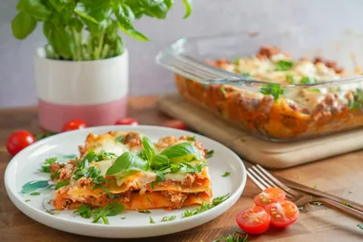
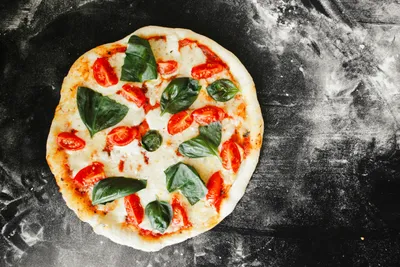
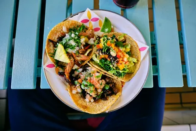
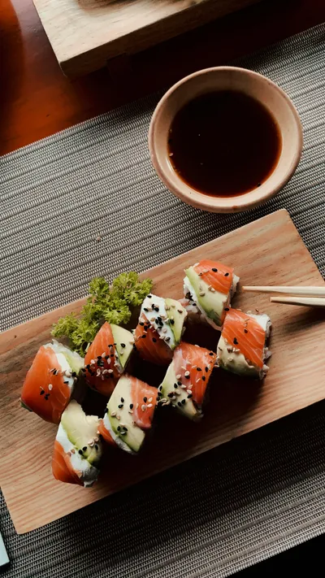

Sabores del Mundo
🍴
Categorias
🍴
Enlaces
Descubre nuevas recetas y aprende a cocinar
En este sitio encontrarás recetas deliciosas, información sobre restaurantes y eventos culinarios.
Platos Italianos

Pasta al Pesto

Lasagna

Pizza Margarita
Platos Mexicanos

Tacos de Pollo
Enchiladas
Guacamole
Platos Asiáticos

Sushi
Ramen
Dumplings